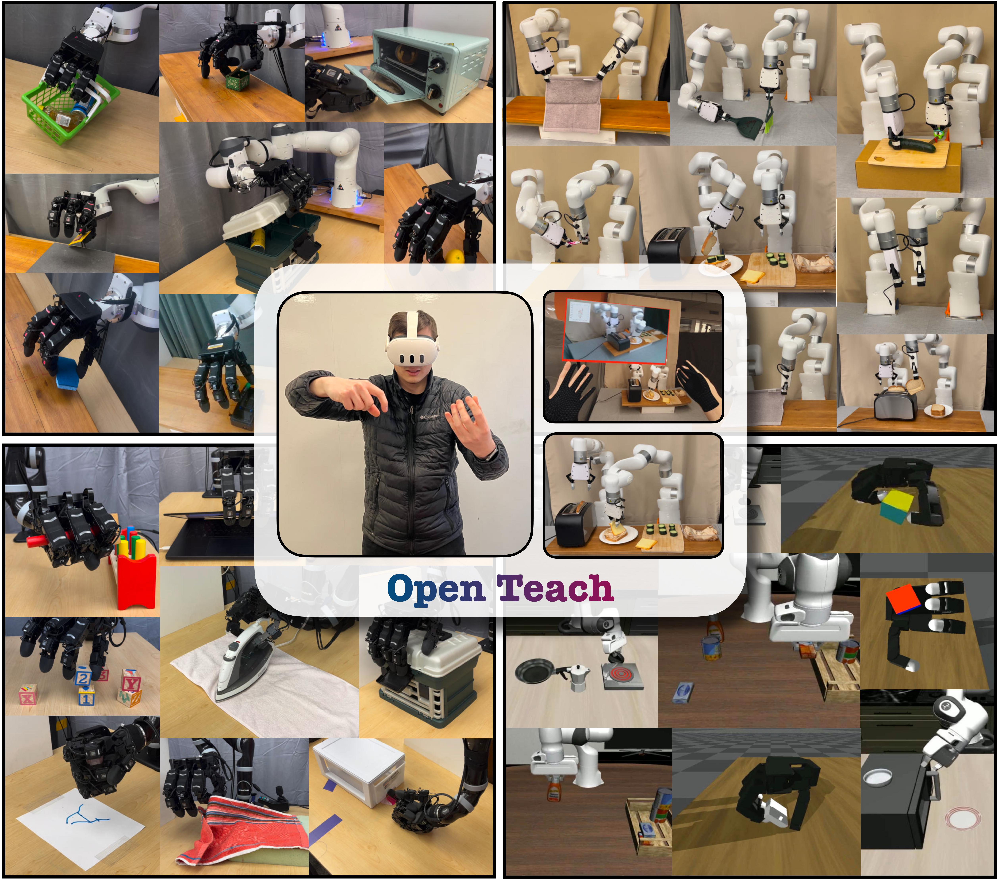
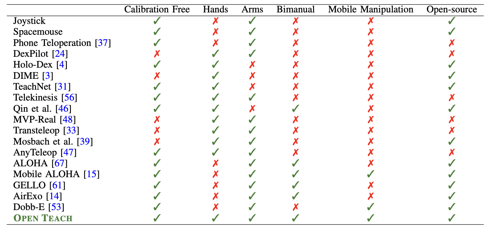

Open-sourced, user-friendly tools form the bedrock
of scientific advancement across disciplines. The widespread
adoption of data-driven learning has led to remarkable progress
in multi-fingered dexterity, bimanual manipulation, and applica-
tions ranging from logistics to home robotics. However, existing
data collection platforms are often proprietary, costly, or tailored
to specific robotic morphologies. We present OPEN TEACH, a new
teleoperation system leveraging VR headsets to immerse users in
mixed reality for intuitive robot control. Built on the affordable
Meta Quest 3, which costs $500, OPEN TEACH enables real-
time control of various robots, including multi-fingered hands,
bimanual arms, and mobile manipulators, through an easy-to-
use app. Using natural hand gestures and movements, users can
manipulate robots at up to 90Hz with smooth visual feedback
and interface widgets offering closeup environment views. We
demonstrate the versatility of OPEN TEACH across 38 tasks on
different robots. A comprehensive user study indicates significant
improvement in teleoperation capability over the AnyTeleop
framework. Further experiments exhibit that the collected data
is compatible with policy learning on 10 dexterous and contact-
rich manipulation tasks. Currently supporting Franka, xArm,
Jaco, Allegro, and Hello Stretch platforms, OPEN TEACH is fully
open-sourced to promote broader adoption.

Hardware
OPEN TEACH utilizes the Quest 3 VR headset for teleoperation, providing low latency and high-frequency visual feedback. The Quest 3 is chosen for its affordability and accessibility.
Below we provide videos of the full-color passthrough provided by Quest 3, and the user interface of the Open Teach app. As shown, we implement a screen within the VR app that displays
the feed from a camera positioned within the scene. This enables the user to view a robotic scene both through their eyes, via visual passthrough, as well as realtime streams from
the robot’s camera. We emphasize the exceptional clarity of the Quest 3 visual passthrough, enabling users to perceive tasks in a 3D environment rather than solely on a 2D screen.
Furthermore, the high-frequency, low-latency teleoperation facilitated by Open Teach allows users to observe real-time movements of the robot, enabling immediate corrections for any errors in its pose.
Tasks
Utilizing Open Teach, we execute a total of 38 tasks across three real-world environments and two simulated platforms,
each featuring distinct robot configurations. This underscores Open Teach's role as a versatile teleoperation
platform, seamlessly compatible with various robot platforms and morphologies.
Franka-Allegro
Kinova-Allegro
Bimanual
Allegro sim
LIBERO sim
Hello-Stretch
Policy Learning
In addition to collecting demonstrations, we highlight the value of collected data in policy training across the Franka
Allegro setup and two simulated environments: Libero and Allegro Sim. Using behavior cloning and inverse reinforcement
learning, we train policies for 10 tasks, achieving an impressive average success rate of 87%.
This validates the efficacy of the data acquired via Open Teach for policy learning.
Comparison with Baselines
We provide a comparison between existing teleoperation systems and observe that Open Teach is the only one that
is calibration free, support multiple arms, hands and mobile manipulators and most importantly, is fully open source.

User Study
We conducted a user study with 15 participants to assess the intuitiveness and user-friendliness of our framework for inexperienced users.
We provide task performance videos from these users. Overall, we found that new users take 2.25x longer and achieve
a success rate of 76% compared to experts. This observation highlights that while our system is intuitive for new
users, prolonged training can lead to further improvement in their performance.